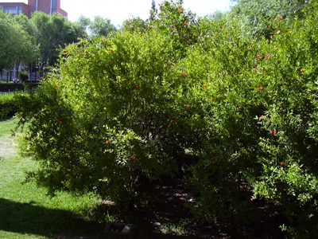

|
Punica
granatum L. Sp.
Pl.
472 (1753)
'Nana' |
Punicáceas |
| Granado enano |
Arbusto semicaducifolio |
|
Arbusto
o arbolillo semicaducifolio y espinoso, monoico
de 1-2
m (otras variedades pueden alcanzar los 6 m de
altura), con corteza
lisa de color marrón claro; ramas terminadas en punta
espinosa.
Hojas
simples,
opuestas, sin estípulas, generalmente
fasciculadas y cortamente pecioladas; lámina de 2 a 8 cm, elíptica,
entera, obtusa
o aguda, de
base atenuada, algo coriácea o blanda, de color verde
claro, volviendose amarillo-anaranjada en otoño.
Flores
solitarias o en
grupos de
2-3 en el
extremo de las ramas, hermafroditas, actinomorfas,
pentámeras,
con receptáculo acopado (hipanto); cáliz con 5
sépalos
coriáceas, persistente en el fruto, de color rojo;
corola con 5
pétalos libres,
con
vernación corrugada,
del mismo color rojo
brillante (aunque hay variedades de flores blancas o
amarillas).
Estambres numerosos
dispuestos en la parte superior del hipanto. Ovario
ínfero,
formado por 2
carpelos que se superponen y se sueldan con el hipanto.
Fruto
carnoso y complejo
(de tipo
balausta), de 5-10 cm de diámetro, globoso, coronado
por los
dientes del cáliz de color amarillo-verdoso a
rojizo, con numerosas semillas rojas o blanquecinas,
cada una de ellas
rodeada
por una cubierta carnosa de color rosa y sabor dulce
en las variedades
hortenses, algo más ácido en las ornamentales.
Florece de
Mayo a Junio.
|
Fotos: |
 Foto: Conchi Sánchez, 30-08-2003 |
Observaciones.-
El nombre genérico deriva del latín punicus y alude a su antiguo nombre “Malus punicum” (manzana de Cartago) dado por Plinio al fruto del granado. La ciudad de Granada debe su nombre al fruto de esta especie. El granado era conocido y cultivado en Egipto hace 2.500 años. Las variedades hortenses, con frutos grandes y dulces, se cultivan en el Sur y Levante de la península Ibérica e Islas Baleares. |
| Área de origen.- La especie procede de Asia occidental y se conocen cultivares seleccionados por sus frutos o como arbustos ornamentales. Su cultivo en Europa fue difundido por los árabes. | |
| Uso en el
campus.- Como arbusto
ornamental; varios ejemplares formando macizos sobre césped
en
la zona central del Campus y en la Escuela de Arquitectura. |
|
| Francisco López Acosta, José
Luis López
Sánchez & Rosa Mayán Saborido (2002); Silvia
Mª Jorquera Pozanco, Conchi Sánchez & Carlos Romero
Zarco (2003)
|
|